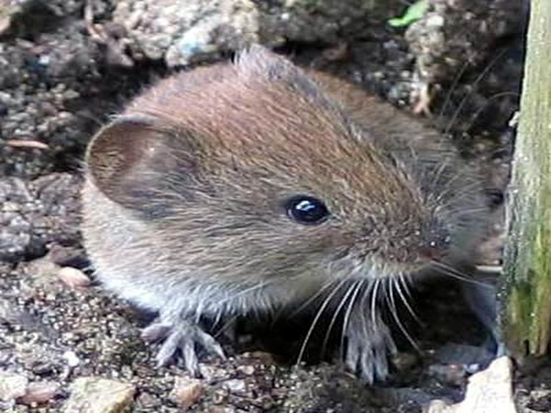

Rötelmaus
Myodes glareolus
Die vorwiegend an Gehölze gebundene kleine Wühlmaus mit leuchtend rotem Fell ernährt sich von Sämereien, Beeren, Nüssen und Ride sowie von tiereischer Kost. Sie bewohnt auch die dichten Bestände von Besensträuchern und Farnen am Lehrpfad. Der kleine Nager benutzt oberirdische Laufgänge und selbstgegrabene unterirdische Röhren, kann aber auch gut klettern. Wie alle Mäuse gehört die Rötelmaus zur Nahrungsgrundlage von Eulen, Greifvögeln und Raubsäugern.